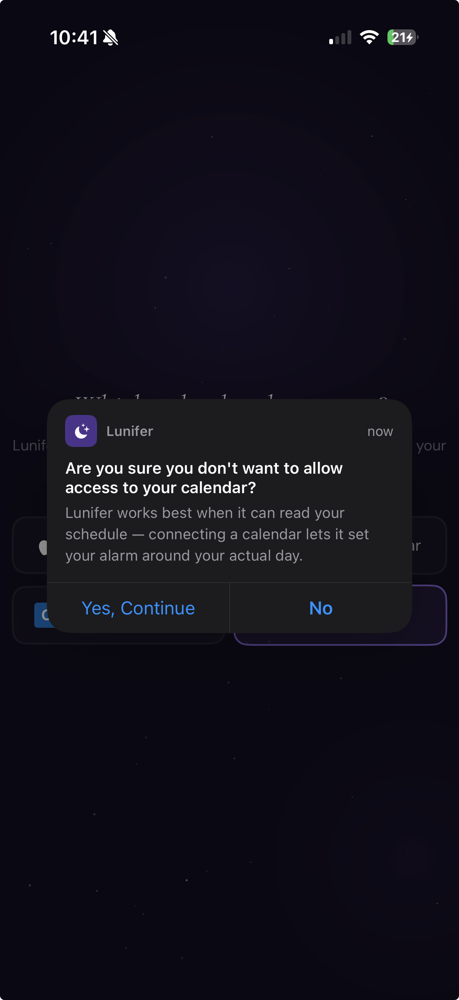

Preview only. This keeps the notification copy and layout intact, but marks “Yes, Continue” as the high-friction red action while leaving “No” in the familiar iOS blue style.
No app code changed yet
Before current screenshot

After proposed emphasis
10:41▮▮▮ Wi‑Fi 21
Lunifer can work better when it knows your actual day.
☾
Lunifernow
Are you sure you don't want to allow access to your calendar?
Lunifer works best when it can read your schedule — connecting a calendar lets it set your alarm around your actual day.
Recommended changeMake “Yes, Continue” red and keep “No” as the standard blue action.
Why this directionRed signals that continuing without calendar access is the riskier path, while “No” remains easy to tap.
Likely filesApply the same button styling in SurveyObjects.swift, Survey.swift, and Settings.swift.